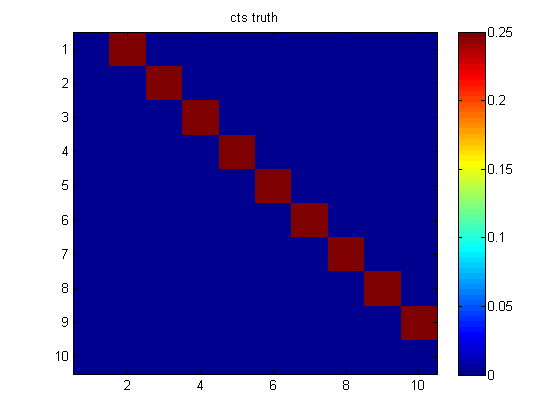
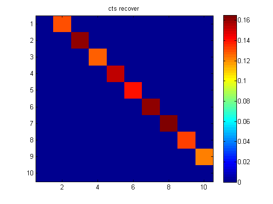
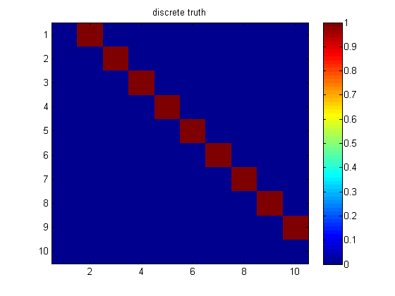
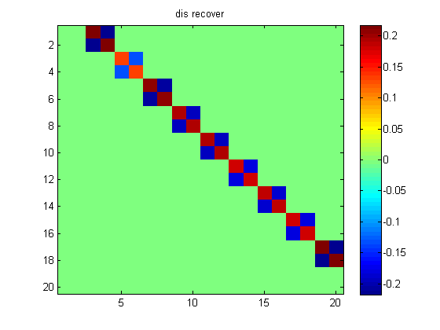
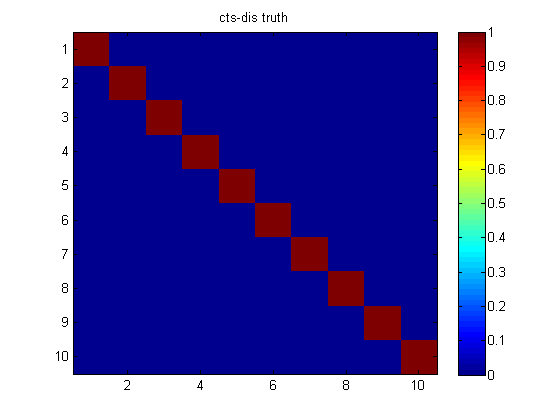
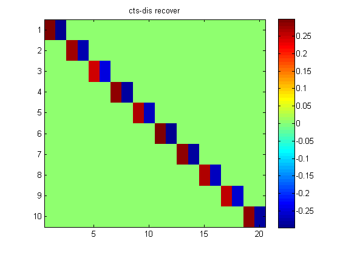

Demo of the synthetic experiments.
Contents
Requires UGM at http://www.di.ens.fr/~mschmidt/Software/UGM_2009.zip
Requires TFOCS at http://tfocs.stanford.edu
Graph parameters
p=10; % number of cts variables q=10; % number of discrete variables n=2000; % sample size e=ones(n,1); L=2*ones(q,1); % levels in each categorical variable Ltot=sum(L);
Create params
rhocts=.25; thcts=eye(p); for i=1:p-1 thcts(i,i+1)=rhocts; thcts(i+1,i)=rhocts; end thdiscts=cell(p,q); maskDisCts=sparse(p,q); for i=1:min(p,q) rhocd=.5; maskDisCts(i,i)=1; thdiscts{i,i}=[rhocd; -rhocd]; end thdis=cell(q,q); maskDis = sparse(diag(ones(q-1,1),1)); [R J]=find(maskDis); for e=1:length(R) thdis{R(e),J(e)}=.5*[1 -1; -1 1]; % attractive end
sample
mixSample;
Init opt variables
theta=zeros(Ltot,p); % cts-dis params beta=zeros(p,p); % negative of the precision matrix betad=ones(p,1); % diagonal of the precision matrix alpha1=zeros(p,1); % cts node potential param alpha2=zeros(Ltot,1); % dis node potential param phi=zeros(Ltot,Ltot); % dis edge potential params Lsum=[0;cumsum(L)]; x=paramToVecv5(beta,betad,theta,phi,alpha1,alpha2,L,n,p,q);
call TFOCS
lam=5*sqrt(log(p+q)/n);
smoothF= @(x)lhoodTfocsv5(x,D,X,Y,L,n,p,q);
nonsmoothH=@(varargin) tfocsProxGroupv6(lam,L,n,p,q, varargin{:} ); % only returns value of nonsmooth
opts.alg='N83'; opts.maxIts=800; opts.printEvery=100; opts.saveHist=true;
opts.restart=-10^4;
opts.tol=1e-10;
[xopt out opts]=tfocs(smoothF, {}, nonsmoothH, x,opts);
[beta betad theta phi alpha1 alpha2]= vecToParamv5(xopt,L,n,p,q);
Nesterov's 1983 single-projection method Iter Objective |dx|/|x| step ----+---------------------------------- 89 | +1.20234e+001 3.08e-013 2.83e-005* Finished: Step size tolerance reached
Plot parameters
close all; figure(1); imagesc(triu(thcts-diag(diag(thcts)))); title('cts truth'); colorbar; figure(2); imagesc(-beta); title('cts recover'); colorbar; figure(3); imagesc(maskDis); title('discrete truth');colorbar; figure; imagesc(phi); title('dis recover');colorbar; figure; imagesc(maskDisCts); title('cts-dis truth');colorbar; figure; imagesc(theta'); title('cts-dis recover');colorbar;





